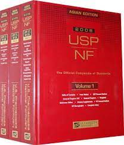

The books containing the standards for drugs and other related substances are known as pharmacopoeias and formularies
They contain a list of drugs and other related substances regarding their source, tests, formulas for preparation, action and uses, doses, storage conditions.
Literally it means that it is a list of medicinal substances, crude drugs and formula for making preparations from them.
These are the books that are written compile and publish under the strict supervision of Government agency of respective countries is known as official book.
These are the books which are written compile and published locally. Which are used as secondary reference sources for drugs and other related substances.